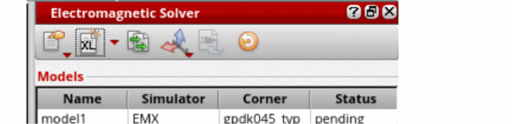

Creating a Model
To create a new model for an electromagnetic simulation:
- Open the IC or package layout in Virtuoso Layout MXL.
-
Press the
Shift+Fbindkey to make all the layers in the layout hierarchy visible. -
Press the
Fkey to fit the complete layout in the canvas. -
In the Electromagnetic Solver assistant, click
on the toolbar of the Electromagnetic Solver assistant.
A new model is added in the Models table.
Observe the following:-
By default, the models are named as
modelx, where x is an incremental number. However, you can double-click in the model name field and specify another name. -
The default simulator assigned to a model for a package design is
EMX. The default simulator for a package design isClarity.
For IC layouts, you can also choose to useEMX.
You can specify the default simulators to be used for package and IC designs by using thevem.ic defaultSimulatorandvem.package defaultSimulatorenvironment variables, respectively. - The Status column of a model shows its simulation run status. By default, it is set as Pending.
-
For IC layouts, the Models table shows an additional column named Corner. In this column, you can choose the name of the process corner to be used for your model. You can use the drop-down list to choose a corner name from the list of available corners. EM Assistant populates the list of corner names by reading the process corner definition files (
.emprocor.procfiles) provided in the directory specified in the Environment Settings form.
-
By default, the models are named as
Related Topics
Configuring Process Settings for IC Layouts
Return to top